Applied English Phonology · Ch. 7.6–7.9
Compound = more than one root morpheme (usually two free morphemes), but functions like a single word. (Yavaš p. 191)
All receive stress on the first element:
| N + N | phónecard, mátchbox, téapot, póstman |
| Adj + N | whíte house |
| V + N | stóp watch |
| Part/Adv + N | óverdose, únderwear |
Exceptions (mostly names): Lake Érie, Mount Sínai, Great Brítain.
Stress on the first element:
| N + Adj | nátionwide, séasick, bédridden |
| Adj + Adj | réd hot |
| Prep + Adj | óverripe |
| Combination | Stress | Examples |
|---|---|---|
| N + V | First element | báby-sit, spóon-feed, cár wash |
| Adj + V | First element | drý-clean |
| V + V | First element | dróp-kick |
| Part/Adv + V | Second element ⚠ | undertáke, oversléep |
Almost always stressed on the first element:
flý-by-night, forgét-me-not, jáck-in-the-box, móther-in-law
Stress on the first element of the original noun compound:
| (a) N+N | "asséembly line worker" |
| (b) Adj+N | "hígh school student" |
| (c) V+N | "píck up truck" |
Nestable: hígh school student essay, asséembly line worker dispute
Several English words receive different stresses in AmE and BrE — patterns fall into 5 groups. (Yavaš pp. 192–195)
| Group | Pattern | Examples |
|---|---|---|
| (a) | 2-syll N (French origin) AmE final / BE penult |
brochúre, ballét, café, chatéau, cliché, cornét, crochét, debrís, fillét, frontíer, garáge, plateáu, premíer, salón, soufflé, toupée, vermóuth, valét |
| (b) | Reverse: BE final / AmE initial | wéekend, pótluck, príncess, récess, résearch, áddress, ínquiry, móustache; (longer) ártisan, Pórtuguese, cígarette, mágazine, cóntroversy |
| (c) | 2-syll V ending in -ate AmE initial / BE final |
cástrate, crémate, díctate, dónate, frústrate, gýrate, mígrate, púlsate, rótate, tránslate, vácate, víbrate, lócate, mútate Exceptions (both final): confláte, creáte, debáte, defláte, eláte, reláte, abáte, infláte, negáte |
Group (d): Forms ending in -ary / -ery / -ory / -mony receive a secondary stress on the penult in AmE, but the same syllable has a reduced vowel in BE. (Yavaš pp. 193–194)
Example: secondary [sékəndɛ̀ɹi] (AmE) vs [sékəndəɹi] (BE) → [sékəndɹi] (3 syll)
| -ary | nécessàry, árbitràry, díctionàry, Fébruàry, líterary, mílitàry, órdinàry, prímàry, sécretàry, témporàry, mómentàry, légendàry, sédentàry, vísionàry, contémporàry |
| -ery | cémetèry, conféctionèry, dýsentèry, mónastèry, státionèry |
| -ory | állegòry, cátegòry, dórmitòry, mándatòry, obsérvatòry, térritòry, prómissòry, compénsatòry, explóratòry, consérvatòry |
| -mony | ácrimòny, álimòny, céremòny, mátrimòny, téstimòny |
AmE has a reduced vowel, BE has secondary stress (opposite of (d)).
Example: agile [ǽʤəl] (AmE) / [ǽʤàɪl] (BE)
ágile, dócile, fértile, frágile, fútile, hóstile, móbile, míssile, stérile, vérsatile, vírile
Exception ([aɪ] in BOTH varieties): prófile, réptile, sénile
Intonation = pitch variations that occur over a phrase or sentence. (Yavaš p. 195, cf. Ch. 1)
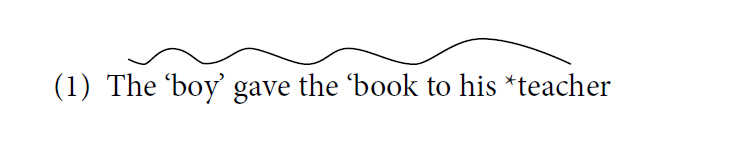
´ = stressed; * = tonic accent (major pitch change). boy, book are stressed; only teacher carries the tonic.
Default pattern: utterance-initial = shared (old) information; utterance-final = new information. → Tonic accent on the last stressed lexical item (N, V, Adj, Adv).
The tonic accent can shift forward from its default position. Not all shifts involve contrast — tone groups are units of information, not syntax. (Yavaš p. 196)
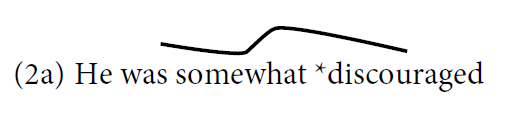
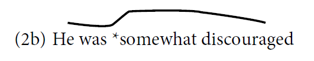
(3) I have *a party to plan / *letters to write.
(4a) Spinach is a *vegetable. (neutral)
(4b) *Spinach is a vegetable. (in discussion of vegetables)
(i) Intransitive V or VP with non-human subject:
(5a) Our *town is on an upswing. (5b) The *bird flew away. (cf. the man *swore)
(ii) Sentential adverbials & adverbials of time in final position:
(6a) I don't watch *TV typically. (6b) It wasn't a very nice *day unfortunately.
Falling contour = expresses finality / completion. Two types: full (long) fall vs short (low) fall. (Yavaš pp. 196-197)
Declarative finality:
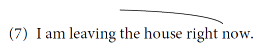
Emotional involvement:
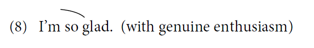
wh-questions:
(9) Which way did she go?
Detached mood — neutral, perfunctory:
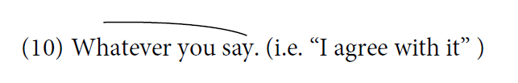
→ Long fall = involved/definitive; short fall = detached/neutral.
Rising contour = non-definiteness, lack of assurance, incompletion. Addressee-oriented; degree of rise matches degree of uncertainty. (Yavaš pp. 197-198)
Puzzlement, unbelieving attitude. Yes-no questions:
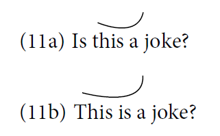
"Are you sure?", "This is hard to believe."
| Yes-no Q | 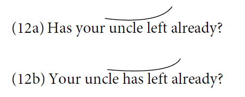 |
| Echo Q | 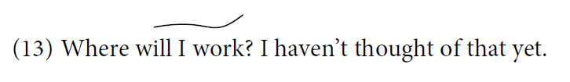 |
| Repetition Q | 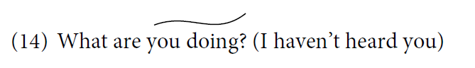 |
| Open-choice | 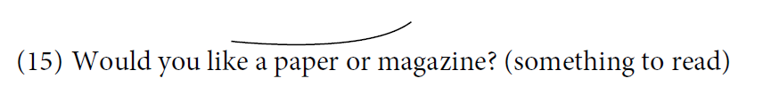 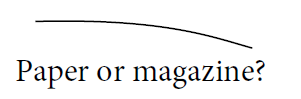 ← closed-choice (falling) |
| Tag Q | 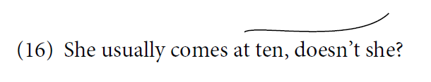 |
| List items | 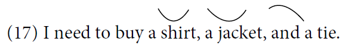 |
| Readiness Q | 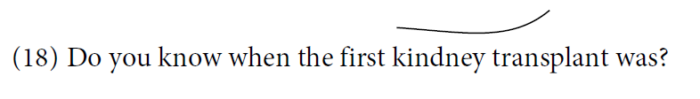 |
Beyond pure falling and rising, English uses three more patterns: fall-rise, rise-fall, and level. (Yavaš pp. 198–199)
Agreement with reservation / hesitation — accepts but with caveat:
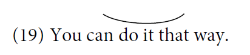
Dramatic equivalent of simple fall — strong approval / disapproval:
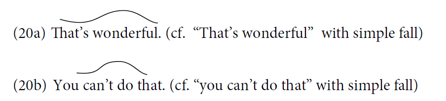
Bored or sarcastic attitude:
(21) A: John will be at the party. B: Great.
Putting all intonation patterns together — the same words "All right" convey seven different meanings depending on contour. (Yavaš p. 199)
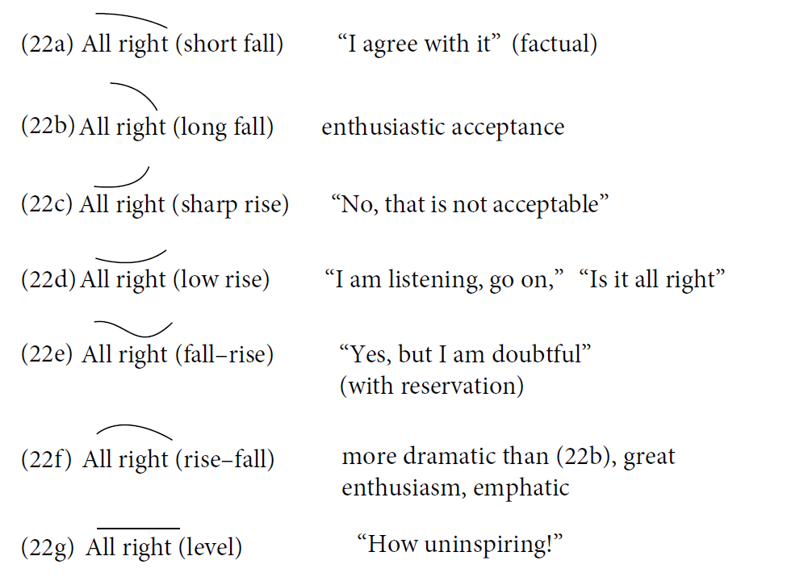
Significant intonation differences exist among varieties of English. (Yavaš pp. 199-200)
BE: less use of high initial pitches, more use of final ones in yes-no questions.
"Would you like some coffee?"
AmE: ↗ (rising)
BE: different contour / no final rise
Cross-cultural misimpressions: AmE rising → BE sees as "too businesslike"; BE → AmE sees as "over-cordial", "unduly concerned" (Bolinger 1998).
Bailey (1983) shows how the same sentence spoken in four English varieties creates four different impressions on outsiders. (Yavaš p. 200)
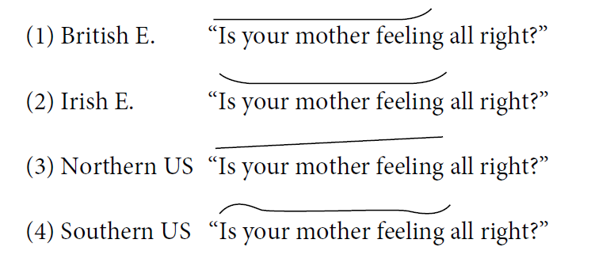
| Variety | Outsider impression |
|---|---|
| (1) British E. | condescending |
| (2) Irish E. | insultingly incredulous |
| (3) Northern US | repetitive |
| (4) Southern US | unaccountably surprised |
Same words, different intonation contours → very different impressions. (For details: Bolinger 1989)
| Utterance | Tonic accent | Why? |
|---|---|---|
| (a) A: Are you coming to the movie? B: I have exams to grade. | grade | Default — last stressed lexical item (V) |
| (b) The dog barked. | dog | Exception (i) — intransitive V + non-human subject → tonic on subject (cf. (5a/b)) |
| (c) The building's falling down. | building | Exception (i) — intransitive VP + non-human subject (cf. "Our *town is on an upswing") |
| (d) I go to Boston, usually. | Boston | Exception (ii) — sentential adverbial "usually" skipped → tonic on last lexical (Boston) |
| Utterance | Answer | Why? |
|---|---|---|
| (i) I am so happy for you. | (d) long fall | Emotional involvement (cf. (8)) |
| (ii) Would you like coffee or tea? (open choice) | (a) low rise | Open-choice alternative (cf. (15)) |
| (iii) Would you like coffee or tea? (closed choice) | (d) long fall | Closed choice = falling |
| (iv) Where will the meeting be held? (info-seeking) | (d) long fall | wh-Q, info-seeking (cf. (9)) |
| (v) Where will the meeting be held? (I couldn't hear) | (a) low rise | Repetition Q (cf. (14)) |
| (vi) What am I doing? I am trying to fix the TV. | (d) long fall | Rhetorical / finality |
| (vii) Her predictions came true. (clear finality) | (d) long fall | Clear finality (cf. (7)) |
| (viii) Who was at the meeting? | (d) long fall | wh-Q (cf. (9)) |
| (ix) Whatever you say. | (c) low fall | Detached / perfunctory (cf. (10)) |
| (x) We should look for him, shouldn't we? | (a) low rise | Tag Q with uncertainty (cf. (16)) |
| (xi) You can take the old route. (agree with reservation) | (e) fall–rise | Agreement with reservation (cf. (19)) |
| (xii) Are you out of your mind? | (b) high long rise | Puzzlement / unbelieving (cf. (11a/b)) |
| (xiii) Did you wash the car yet? | (a) low rise | Yes-no Q (cf. (12a/b)) |
| (xiv) I would have done it the same way, wouldn't you? | (a) low rise | Tag Q (cf. (16)) |